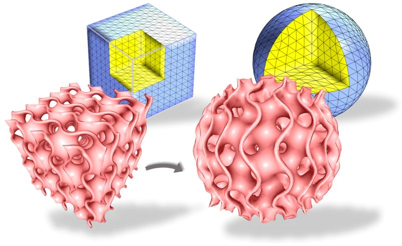
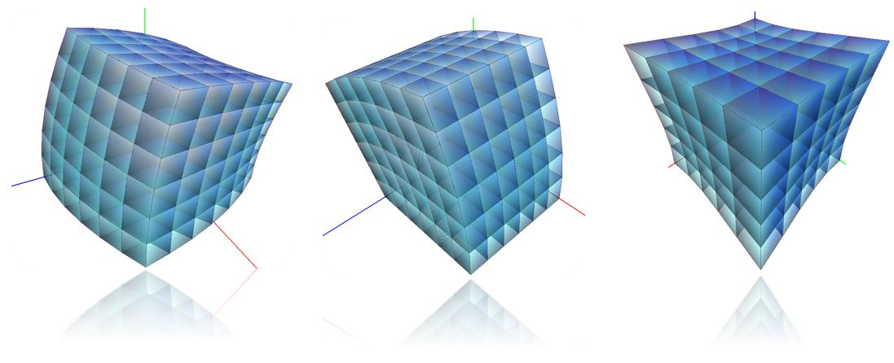
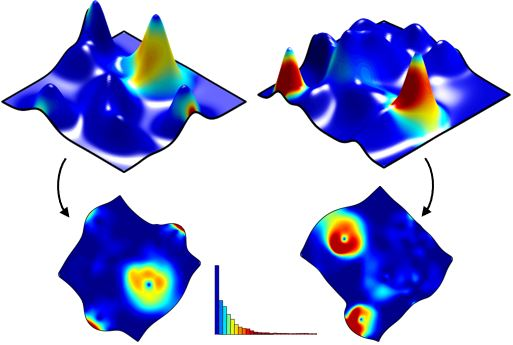

Alexander Naitsat
Email anaitsat@campus.technion.ac.il
I acquired my Ph.D. at the Department of Electrical and Computer Engineering at the Technion, under the supervision of Prof. Yehoshua Zeevi and Assoc. Prof. Emil Saucan. The main topics of my research thesis included geometric optimization and 3D shape analysis. In addition to my Ph.D., I hold B.Sc. in Computer Science with Mathematics and M.Sc. in Applied Mathematics, both from the Technion.
Before my graduate studies, I was part of Intel's processor design team in Haifa. During my doctoral studies, I had research internships at Blink and PTC, where I worked on eye-tracking technology and inverse 3D modeling techniques, respectively.
After earning my Ph.D., I joined Amazon Go as an applied scientist intern, where my research centered around 3D reconstuction and 3D shape represenation methods for neural networks.
My primary fields of interest include Computer Vision, Geometry Processing and Computer Graphics.
I acquired my Ph.D. at the Department of Electrical and Computer Engineering at the Technion, under the supervision of Prof. Yehoshua Zeevi and Assoc. Prof. Emil Saucan. The main topics of my research thesis included geometric optimization and 3D shape analysis. In addition to my Ph.D., I hold B.Sc. in Computer Science with Mathematics and M.Sc. in Applied Mathematics, both from the Technion.
Before my graduate studies, I was part of Intel's processor design team in Haifa. During my doctoral studies, I had research internships at Blink and PTC, where I worked on eye-tracking technology and inverse 3D modeling techniques, respectively.
After earning my Ph.D., I joined Amazon Go as an applied scientist intern, where my research centered around 3D reconstuction and 3D shape represenation methods for neural networks.
My primary fields of interest include Computer Vision, Geometry Processing and Computer Graphics.
Journal Papers (hover over images for a short summary)
-
 Classification of Audio Signals Using Spectrogram Surfaces and
Classification of Audio Signals Using Spectrogram Surfaces and
Extrinsic Distortion Measures
-
On Inversion-Free Mapping and Distortion Minimization
- 
-
Conferences-
A Differential Geometry Approach for Change Detection in Medical Images
International Symposium on Computer-Based Medical Systems, IEEE CBMS 2017
DOI | Paper | Presentation -

Volumetric Quasi-Conformal Mappings
VISIGRAPP 2015
Paper -
Technical Reports -

Distortion Measure of Spectrograms for Classification of Respiratory Diseases
Technical Report 2021
arXiv -
Others